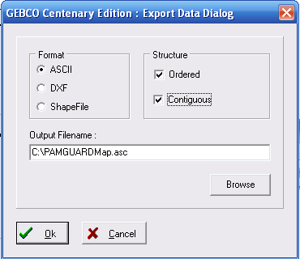

PAMGuard now supports two types of map, raster maps and contour vector maps.
Raster maps are the most easily accessible now that the GEBCO contour maps are no long available (see below).
Raster maps can be created and downloaded from the BODC website in NetCDF format.
On the BODC website, DO NOT download the global grid files, Scroll down to where you can select a user defined area, hold the Shift key and use the mouse to select the area you're interested in then place an order for the data in "2D netCDF" format.
The maps typically have about a 400m resolution, so will look a bit grainy if you zoom in.
You are also advised against making a map that is too large. Maps that are too large will be downsampled by PAMGuard, further
reducing their resolution.
PAMGuard contour map files are text files that follow the same format for maps used by the IFAW LOGGER program. These are based on the standard export files from the GEBCO Digital Atlas.
Sadly, the GEBCO digital atlas is no longer available, though many users will have old ascii contour files or an old copy of the GEBCO CD's or DVD's which they can still use.
For more information on GEBCO click here.
PAMGuard contour map files consist of a series of datablocks each of which defines a segment of depth contour (or coastline). Within each block the first line specifies the contour identity and the number of latitude and longitude values to follow. Subsequent lines are the latitude and longitude values for the contour segment
0 3
-10.0261 39.7077
-10.0186 39.7119
-10.0261 39.7077
100 7
-10.0000 39.7211
-10.0027 39.7252
-10.0186 39.7227
-10.0302 39.7177
-10.0358 39.7091
-10.0286 39.7044
-10.0000 39.7119
The example above shows two short datablocks
The first being three values for a section of coastline and the second being seven values on the 100m depth contour.
Run the GebcoCE program from the CD
(Note – some steps, can be very slow, especially if large amounts of data need to be read from he CD so patience may be required)
On the main panel ensure that decimal degrees DD are chosen
The first task is to create a map with the appropriate coverage and detail
Click >Select>Chart Definition
Which will bring up the Chart Definition Dialog

Open and modify the following tabs:
Data Source
Chart Series There are two sources of data on the CD.
GEBCO which covers the whole world and IBCM which provides better detail and precision for the Mediterranean and Black Sea.
Gebco Coastline Resolution – allows different coastline resolutions to be chosen. Generally the default (GEBCO) option is adequate
Contours Allows the user to select contours to display and export
Area Allows the coverage of the chart to be specified. If you don’t know this in advance click check the Use Zoom button and click Select Area.
This will allow the user to select the area from a small scale map using a zoom box
Choose an area somewhat larger than your requirements there will be an opportunity to amend this later.
Finer scale choice of area can be made by choosing
Map> Zoom In > From Map
(choose Map> Zoom Out to return to previous view)
Use the Display menu to fine-tune the data to be displayed (and exported)
>Display>Bathymetric Contours to choose contours
>Display>Coastline to turn coastline on or off
>Display> Gridded Data to turn off display of Gridded Data
When you are happy with your map
>File> Export Data > Vector Data to export

In the Export dialog choose ASCII as the format for export and specify a file name.
The final step is to remove all the “>” symbols from the document. This can be done using "find and replace" in a text editor
> 0 3
56.3531 -3.2707
56.3573 -3.2443
56.3531 -3.2707
Save the file as a text file with an .asc extension and load it within PAMGuard by clicking
Map>Map Options